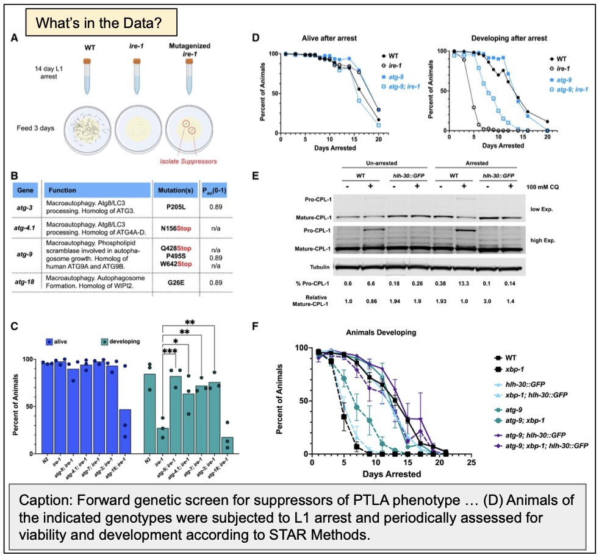
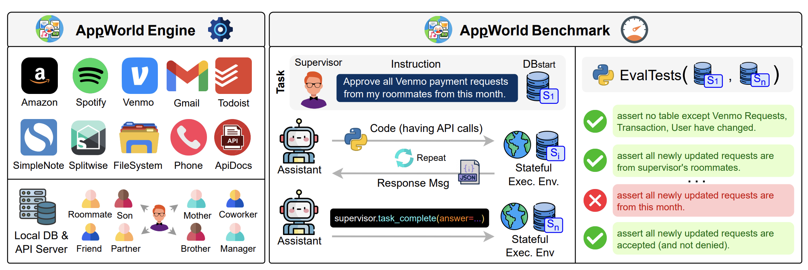
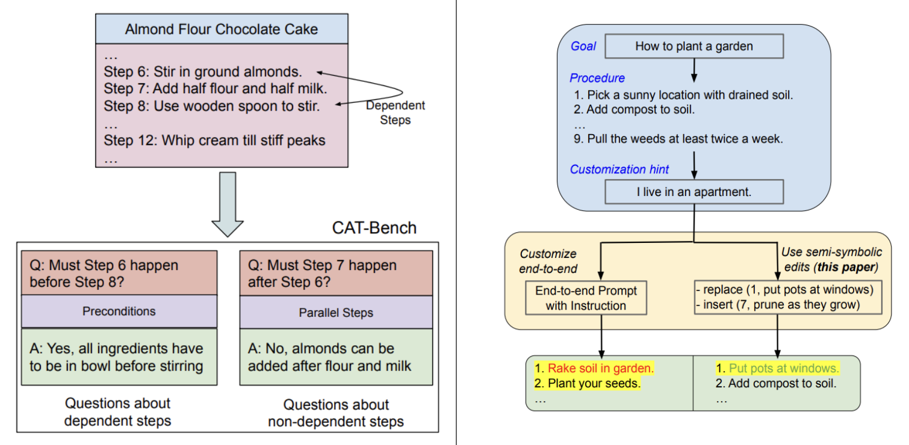
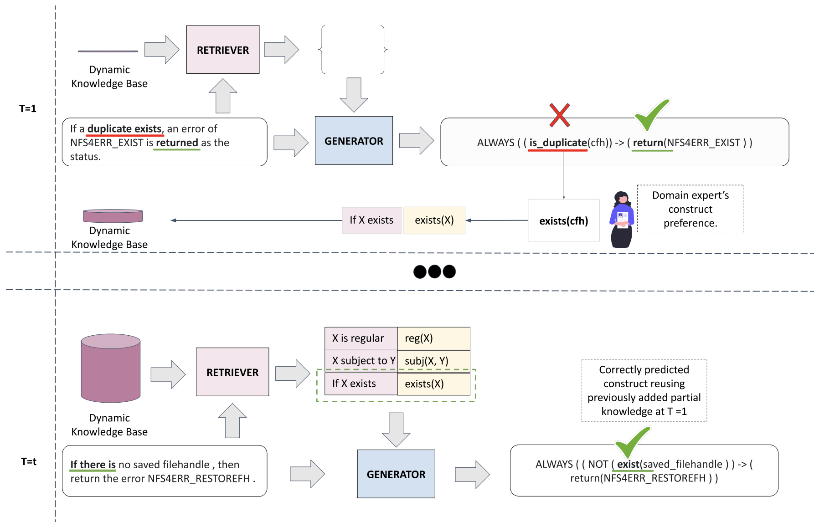
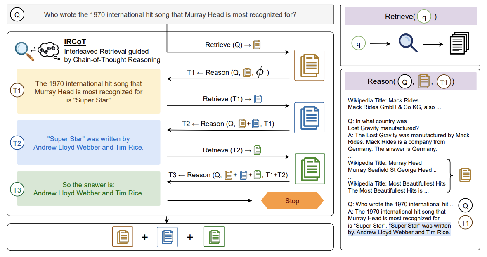
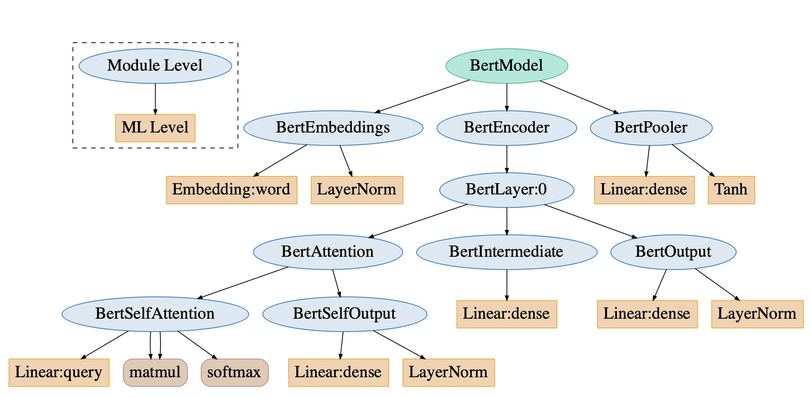

Stony Brook University · New York
Language Understanding
& Reasoning.
We build, evaluate, and analyze systems that identify, extract, understand, and reason about actions and events, described in natural language and through programmatic constructs.
Research

AI for Science
The advanced reasoning and tool use abilities of LLMs can be applied to the diverse needs in scientific reasoning domains. Scientific reasoning however demands a level of precision and rigor that current LLMs, despite their substantial capabilities are unable to deliver. In one thread of work, our team is building ideas for setting up rigorous benchmarks for understanding when scientific claims are effectively supported by multimodal data (MuSciClaims), and developing agentic workflows that target precise reasoning. A second line of work is focused on developing models that can reason about new materials. In particular, we are looking at developing LLMs for polymer design by teaching them to do various tasks involving basic chemistry.

Autonomous Agents for Solving Tasks
Agents, augmented with language models and tools, are designed to solve a variety of tasks ranging from day to day activities like emailing to complex software engineering problems. We focus on development of benchmarks and methodologies for improving autonomous agents. We have developed AppWorld, a controllable world of apps for evaluating language models as autonomous agents. This work has won the ACL 2024 Best Resource Paper and the National Artificial Intelligence Research Resource (NAIRR) Pilot Award.

Planning & Reasoning in Language Models
We focus on analyzing the planning and reasoning capabilities of language models by creating novel evaluation benchmarks. We developed CaT-Bench, a testbed for assessing a model's ability to understand causal dependencies within plans, and CustomPlans to evaluate how well they can customize real-world plans.

Verifying Complex Software with NLP
This NSF funded project is looking at developing semantic parsing systems that convert system domain specification texts into formal statements. We have developed SpecNFS, a dataset of specifications from the Network File System documents and corresponding intermediate formal representations from a custom semantic representation called SpecIR. We also formulate ROLex, a retrieval-augmented parsing mechanism for overcoming the problem of open-vocabulary constructs when formalizing specifications.

Explainable Natural Language Inference
This NSF supported project focuses on developing explainable inference algorithms. Applications include question answering, and relation extraction. We formulated multiple tasks and benchmarks to evaluate the limitations of question answering systems in multi-hop settings (DiRE, MusiQUE). We also develop task datasets to evaluate model capabilities in different domains like biology (BioNLI).

Building Efficient LLMs
Models are getting larger, consuming more compute, memory, and energy. Our work looks into ways for making NLP models faster, smaller, and more energy efficient where possible. We have focused on predicting energy usage of models on diverse hardware, improving their sparsity and making them accessible on increasingly smaller devices